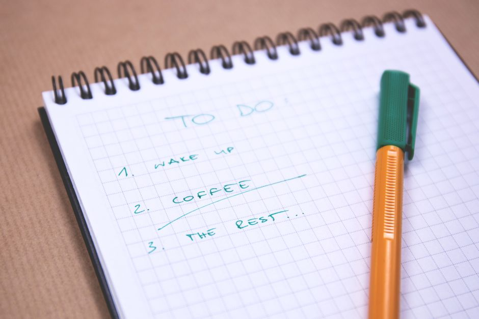

Six Habit Tracking Methods, Compared Honestly
The real question is not which tracker is best. It is which one you will actually open tomorrow. Paper journals, spreadsheets, phone apps, wall calendars, printable sheets, and accountability partners all work, in the sense that people build real habits with every single one of them. The method matters less than whether it fits how you already live. What follows is a straight comparison of six common ways to track a habit, what each one is actually good at, and where each one quietly falls apart.
Quick Verdict
Every method here works well enough to build a real habit. The differences show up in daily friction, what happens the day you miss, and how well each one scales past a single habit.
| Method | Daily Friction | Missed Day Recovery | Data And Insights | Multiple Habits | Cost |
|---|---|---|---|---|---|
| Paper and Bullet Journals | Medium | Good, no reset | Minimal | Good, five to eight habits | Around $15 |
| Printable and Tally Sheets | Low | Good, no reset | Minimal | Fair, one sheet per habit | Nearly free |
| Spreadsheets | High | Fair, stats still hold | Excellent | Excellent | Free |
| Digital Habit Tracker Apps | Very Low | Poor if streak based | Good | Excellent | Free to $10 a month |
| Wall Calendar | Very Low | Poor, visible gap | None | Poor, one habit | Around $10 |
| Accountability Partners and Groups | Medium | Depends on the partner | Anecdotal only | Poor, one or two habits | Free |
How These Methods Were Compared
Six ways of tracking a habit get set side by side here using the same handful of yardsticks that habit researchers and everyday trackers keep coming back to. None of these are exotic metrics. They are the practical questions anyone actually has to answer before picking a method.
- Daily friction: how long it takes to log a habit in the moment, and how many steps stand between you and marking it done.
- Missed day recovery: what happens to your record and your motivation the day after you skip.
- Data and insights: whether the method shows you patterns over weeks and months, or just today.
- Multiple habit tracking: how well the method holds up once you are tracking more than one or two habits at a time.
- Cost: what it actually costs to keep using, in money and in ongoing maintenance.
Why Tracking Habits Works
Before comparing methods, it helps to know why tracking works at all. Three mechanisms show up again and again in the research.
1. Awareness. Most people overestimate their own consistency. A study published in the British Journal of Health Psychology found that people who believed they exercised most days actually averaged 2.3 days a week. A written or logged record closes that gap between what you did and what you remember doing. You cannot argue with your own data.
2. Reinforcement. The act of marking a habit complete creates a small reward on its own. Checking a box, filling a square, or tapping done triggers a short burst of satisfaction that makes you want to repeat the action tomorrow. Author James Clear has described a habit tracker as an obvious cue, an attractive form of motivation, an easy task to complete, and an immediately satisfying one, all four principles of behavior change bundled into a single mark.
3. Accountability. A visible record, whether it is a streak counter, a filled in grid, or a consistency score, works as a form of accountability to your future self. A 2008 weight loss trial led by Hollis and colleagues found that people who kept a daily log lost roughly twice as much weight as those who did not, and the more consistently they logged, the more they lost. University College London researcher Phillippa Lally found that habits take an average of 66 days to become automatic, with a range from 18 to 254 days depending on the behavior and the person. The popular claim that habit formation takes 21 days is a myth. Because the real window runs closer to two months, a tracking method that keeps you engaged past the point where most people quit matters more than which specific method you pick.
Method 1: Paper and Bullet Journals
How It Works
You create a grid in a physical notebook, habits down one side and days across the top, and fill in a square each day you complete the habit. The bullet journal community has turned this into an art form with elaborate spreads, color coding, and monthly migrations, but the basic mechanic is the same either way. Setting up a new monthly spread takes 20 to 30 minutes. Filling in a single square each day takes about 10 seconds.

Strengths
- Tactile satisfaction: the physical act of filling in a square gives stronger sensory feedback than tapping a screen, which for many people makes the reward feel more real.
- Built in reflection: setting up a new monthly spread forces you to decide which habits actually matter, and migrating an incomplete habit forward makes you confront what you are really committed to.
- No notifications: a notebook does not ping you, show you ads, or tempt you toward another app while you are trying to log a habit.
- Deeper memory encoding: a study published in Frontiers in Psychology found that handwriting activates broader brain networks than typing, including regions tied to memory and sensory processing, so writing "meditated 10 minutes" by hand appears to register more than tapping a checkbox.
Weaknesses
- Easy to forget: if the journal is not physically in front of you at the right moment, you skip the log, and often the habit along with it.
- No historical analysis: figuring out your consistency rate over the past three months means flipping through pages and doing the math yourself, since paper does not calculate anything.
- Setup overhead: drawing a new spread every month takes real time, and if that setup starts to feel like a chore, the tracking usually stops along with it.
- Binary only: a square is either filled in or empty. There is no room for partial completion or contextual notes unless you build an increasingly complicated system on top of it.
Best For
People who already enjoy the ritual of writing by hand, keep a journal already, and are not chasing detailed data. If the process of setting up a tracker feels as satisfying as using it, this is a strong fit. If you want to see your consistency trend over months at a glance, you will likely outgrow it.
Method 2: Printable and Tally Sheets
How It Works
You download or draw a simple grid, print or copy it, and stick it somewhere visible like the fridge or a desk. Each day you complete the habit, you mark the corresponding box or tally. Total cost is close to nothing, usually just a few cents of ink.
Strengths
- Almost free: a printable sheet costs about 5 cents of ink and nothing else.
- Built for short sprints: a 30 day challenge or a 12 week fitness block fits naturally onto a single sheet with a clear end date, giving you one page to look at every morning.
- No login or battery: there is no account to set up, no subscription, and nothing to charge, which also makes this a workable option for kids learning their first habits.
Weaknesses
- No alerts: a printable does not remind you at any point in the day. If you forget it exists, it stops working.
- No data: there is no way to calculate a consistency rate or spot a trend without counting marks by hand.
- Gets tossed, not analyzed: once the sheet fills up, most people throw it away instead of reviewing what worked and what did not.
Best For
Short, defined sprints with a clear end date, and simple habits for kids or anyone who wants zero setup beyond printing a page.
Method 3: Spreadsheets
How It Works
You build a spreadsheet with habits as rows and dates as columns, marking each cell as you complete a habit. More advanced versions add conditional formatting, completion rate formulas, and charts to show trends over time. Setup takes 10 to 30 minutes depending on how much customization you want.
Strengths
- Full customization: if you can imagine a tracking system, you can build it here, from custom columns for mood or sleep to conditional formatting that turns a cell green when you hit a target.
- Real data analysis: a spreadsheet can calculate a rolling weekly average, chart three months of data in one click, and surface patterns that would stay invisible on paper.
- Free: Google Sheets costs nothing and works on every device you own.
- Cross device access: your data syncs automatically between phone, tablet, and desktop.
Weaknesses
- Real friction: opening a spreadsheet, finding the right cell, and typing in data is not hard, but it is harder than it needs to be, and that friction compounds every single day. Most spreadsheet trackers get abandoned within a few weeks because daily entry on mobile is clunky.
- Maintenance burden: new months need new columns, formulas break, and the system meant to simplify your life becomes one more thing to maintain.
- No built in motivation: a spreadsheet does not celebrate a win or remind you of a streak. It is a grid of data, not a motivational tool.
- Complexity creep: what starts as a simple grid tends to grow more tabs and more formulas over time until it takes more effort to maintain than the habits themselves.
Best For
Data oriented people who already live in spreadsheets for work and want deep analytical control over their habit data.
Method 4: Digital Habit Tracker Apps
How It Works
You define your habits inside an app, check them off daily, and the app logs your completion, often alongside a streak count of consecutive days. Most apps add reminders, categories, and some kind of visual progress display, whether that is a calendar heatmap, a chart, or a simple streak number.
Strengths
- Very low friction: open the app, tap once, close the app. The interaction takes seconds.
- Built in reminders: a push notification at the time you choose solves the "I forgot" problem that undermines paper and spreadsheet methods.
- Automatic data: completion rates, trends, and streak history get calculated for you, no manual counting required.
- Built for multiple habits: apps are designed to hold many habits at once, each with its own schedule and reminder.
Weaknesses
- Streak anxiety: the longer a streak runs, the more there is to lose. A 90 day streak does not feel 90 times as good as day one, it feels like 90 days worth of pressure not to slip, and research on loss aversion shows that fear of losing a streak can outweigh the benefit of the habit itself.
- All or nothing resets: miss one day and a streak based app often resets to zero, showing "Day 1" as if the previous weeks never happened, which is demoralizing enough that many people quit the habit entirely rather than restart the count.
- Notification fatigue: reminders that help in week one often turn into background noise by week three, and once you start swiping notifications away without acting on them, the system has stopped working.
- Abandonment is common: research on app retention found that 77 percent of users abandon a new app within three days, and health and wellness apps in particular see day one retention around 27 percent, dropping to as low as 3 to 12 percent by day 30.
Best For
People tracking three or more habits, anyone with an unpredictable schedule who needs a tracker that travels with them, and anyone who genuinely responds to reminders rather than tuning them out.
Method 5: Wall Calendar
How It Works
You hang a large calendar somewhere visible and mark an X on every day you complete the habit. The method is closely associated with Jerry Seinfeld's reported approach to writing jokes every day, sometimes called "don't break the chain." There is no app, no login, and no password to reset. The chain of X's is the entire system.
Strengths
- Always visible: a wall calendar sits in front of you every time you walk past it, which works as a passive reminder no app notification can match.
- Zero friction: picking up a marker and drawing an X takes about one second.
- Passive social pressure: if the calendar hangs somewhere others can see it, that visibility alone tends to be motivating, since nobody wants a wall of visible gaps.
- A satisfying ritual: there is something genuinely satisfying about physically marking a calendar, and the growing chain becomes a tangible record of effort.
Weaknesses
- One habit only: a wall calendar works well for a single habit. Trying to track five habits on one calendar quickly turns into a cluttered mess.
- The same streak problem: a missed day leaves a visible gap in the chain, and that gap can feel just as discouraging as an app streak resetting to zero.
- Location dependent: the calendar only works as a cue when you are physically near it, so travel or a change in routine breaks the system.
- No analysis: there is no way to calculate a consistency rate without literally counting X's by hand across months.
Best For
Locking in a single keystone habit performed at home, where maximum visibility and minimum friction matter more than tracking anything else.
Method 6: Accountability Partners and Groups
How It Works
You pair up with a friend, join a group, or work with a coach, and report your habit completions on a regular schedule, whether that is a daily text, a weekly check in, or a shared tracking dashboard. The social layer adds an external pressure that no self tracking method can replicate on its own.
Strengths
- The strongest accountability: knowing someone else will see whether you followed through is one of the most powerful behavior change mechanisms available. Studies on accountability partnerships have found completion rates 65 to 95 percent higher than solo tracking, depending on how the arrangement is structured.
- Real support: a good partner does more than log your behavior. They encourage you when you struggle and help you problem solve when life gets in the way.
- An outside perspective: a partner or coach can spot a pattern you cannot see yourself, like noticing you always skip a habit on the same day of the week.
Weaknesses
- Dependency: if your partner loses interest, gets busy, or moves on, the whole system collapses, and most accountability groups lose momentum within a few weeks.
- Social friction: reporting a failure to another person can feel shameful rather than motivating if the relationship is not handled carefully.
- Scheduling overhead: regular check ins require coordination, and what starts as a quick daily text can turn into one more obligation.
- Not built for scale: this method works for one or two habits. Reporting on five different habits to another person every day is exhausting for both sides.
Best For
People who are externally motivated and have a genuinely reliable partner or group. This tends to work best paired with another tracking method rather than standing alone.
Head To Head Comparison
Here is how the six methods stack up when you isolate one factor at a time.
Daily Friction
- Wall calendar, about one second to mark an X.
- Digital apps, a few seconds to open and tap.
- Printable and tally sheets, a quick mark once the sheet is in front of you.
- Paper and bullet journals, around 30 seconds to open the notebook, find the page, and fill in a square.
- Accountability partners and groups, about a minute to send a text or post an update.
- Spreadsheets, 30 to 60 seconds to open the file, find the cell, and enter data.
Recovery After A Missed Day
- Paper and bullet journals, a missed day is just an empty square, nothing resets.
- Printable and tally sheets, the same as paper, an empty box with no counter to lose.
- Spreadsheets, the cell stays blank but your overall completion rate and averages still mean something.
- Accountability partners and groups, recovery depends entirely on how your partner responds to the miss.
- Digital apps, streak based apps often reset the counter to zero, which research on loss aversion ties to a real risk of quitting altogether.
- Wall calendar, the same all or nothing chain problem as a streak app, with the missed day left visible on the wall.
Data And Insights
- Spreadsheets, unlimited analytical power through custom formulas, pivot tables, and charts.
- Digital apps, automatic streak history, completion percentages, and trend graphs built in.
- Accountability partners and groups, anecdotal insight only, useful but not systematic.
- Paper and bullet journals, requires manually flipping back through pages and doing your own math.
- Printable and tally sheets, the same manual limitation, and most sheets get thrown away once full instead of reviewed.
- Wall calendar, purely visual, with no way to calculate a consistency rate without counting X's by hand.
Tracking Multiple Habits
- Digital apps, built to hold many habits at once, each with its own schedule and reminder.
- Spreadsheets, handles multiple habits well with separate columns or tabs for each one.
- Paper and bullet journals, works for five to eight habits per spread before the page gets crowded.
- Printable and tally sheets, fine for one or two habits per sheet, though each additional habit usually needs its own sheet.
- Accountability partners and groups, realistically works for one or two habits, since reporting five habits to another person daily is exhausting for both sides.
- Wall calendar, built for exactly one habit, since tracking several on the same calendar turns into a cluttered mess fast.
Cost
- Printable and tally sheets, close to free, about 5 cents of ink per sheet.
- Spreadsheets, free on Google Sheets and works on every device.
- Accountability partners and groups, free, assuming you already have the relationship.
- Wall calendar, around $10 for a calendar and a marker.
- Paper and bullet journals, around $15 for a notebook, more for a guided or preprinted journal.
- Digital apps, free up to about $10 a month, and subscription costs add up the longer you keep paying.
How To Choose Your Method
Skip the analysis paralysis. Answer the questions below and start with whichever method they point to. You can always layer in a second method later.
How Many Habits Are You Tracking?
One habit: a wall calendar or a single line on a printable sheet is enough. Do not download an app for one behavior, since the physical visibility of a calendar on your wall tends to beat something buried on your phone.
Two to five habits: a dedicated app or a paper journal both work well here. Apps bring reminders and automatic consistency calculations. Journals bring the tactile ritual.
More than five habits: an app is close to a requirement at this point. Paper gets unwieldy, spreadsheets grow complex fast, and a wall calendar is not built for it at all. It is also worth asking whether five or more habits at once is realistic, since starting with one or two and building up tends to work better anyway.
How Do You Handle Missed Days?
If you bounce back easily: any method works, including streak based apps and wall calendars, since a reset does not bother you enough to derail the habit.
If a missed day derails you: avoid streak based apps and wall calendars, since both carry the same all or nothing reset problem. A paper journal, a printable sheet, or a spreadsheet all let a missed day stay a single empty box instead of a reset counter.
How Data Driven Are You?
Not very: a paper journal or a wall calendar is enough. You do not need analytics, you need the habit itself, and chasing perfect data can get in the way of actually doing the thing.
Somewhat: a digital app gives you enough data, completion rates, streaks, basic trends, without requiring you to build or maintain anything yourself.
Very: a spreadsheet is the only method built for real analysis. Be honest with yourself about whether you are tracking for insight or using the spreadsheet as a way to avoid doing the actual habit.
What Does Your Schedule Look Like?
Predictable routine: almost any method works if you are at the same desk or the same room at the same time every day, even a wall calendar.
Variable or unpredictable: you need something that travels with you, which usually means an app. Paper trackers and wall calendars tend to fail for people with irregular schedules, since the tracker is not physically present when the habit moment actually arrives.
What The Research Keeps Confirming
Across every method compared here, a few principles hold up no matter which tool you pick.
- Consistency beats perfection. Any method that punishes an imperfect day, like a streak reset or a visible gap on a calendar, works against the way habits actually form.
- Lower friction means higher adherence. The easier a method is to use in the moment, the more likely you are to keep using it, and the more likely the habit itself survives.
- Recovery is the moment that matters most. The day after a miss decides whether a habit continues or quietly ends. A method that makes recovery feel normal instead of punishing wins over one that does not.
- Visible progress keeps you going. A chain of X's, a rising completion percentage, or a filled in grid all work the same way, by making effort visible enough to want to protect it.
None of that means there is one correct answer. If a bullet journal keeps you consistent, keep using it. If a wall calendar is the reason you exercise every morning, that is your method. The goal was never to find the theoretically perfect tracking system. It is to find the one that gets you back to the habit tomorrow, and the day after that.
Frequently Asked Questions
What is the best habit tracking method?
There is no single best method, only the one that fits how you already live. Apps and wall calendars win on speed and low friction. Paper journals and spreadsheets win on reflection and long term data, since writing something down or reviewing a chart makes the information stick. If you have tried one method and it stopped working, layering a second one on top, like a fast digital log paired with a weekly paper review, tends to beat switching to a completely different single method.
How long does it actually take to form a habit?
Research from University College London found an average of 66 days, with a range from 18 to 254 days depending on the behavior and the person. The popular 21 day figure is a myth. Because the real number runs closer to two months, a tracking method that keeps you engaged past the point where most people quit, usually somewhere around day 30, matters more than the specific method you choose.
Do I have to track every single day for it to work?
No. Missing one day rarely undoes a habit. Missing two days in a row is where the risk starts, since one skip can turn into a pattern if it is not addressed. Tracking exists to make that gap visible so you can close it quickly. Log honestly instead of backfilling a day you skipped, and judge your progress over the full month rather than any single missed square.
Can I combine more than one tracking method?
Yes, and combining two complementary methods tends to outperform any single method on its own. One comparison of tracking approaches found a 71 percent completion rate for a hybrid method that paired digital daily tracking with paper reflection, ahead of 67 percent for digital only and 59 percent for paper only. A common pairing is a digital app for daily check ins and reminders alongside a paper journal for weekly reflection, since the app handles consistency and the notebook handles insight. Another is a wall calendar for one high priority habit paired with an app for everything else. Two methods together is usually the sweet spot. Three tends to become more system than the habits themselves are worth.
What should I do the day after I miss a habit?
Show up again at any size rather than trying to make up for the missed day. If your habit is a 30 minute workout, a five minute version still counts and breaks the skip pattern before it becomes two misses in a row. Log the missed day honestly instead of erasing it, since a single gap in an otherwise consistent record is data, not a failure worth abandoning the whole habit over.